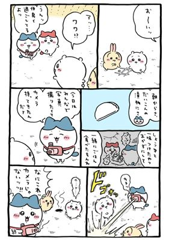
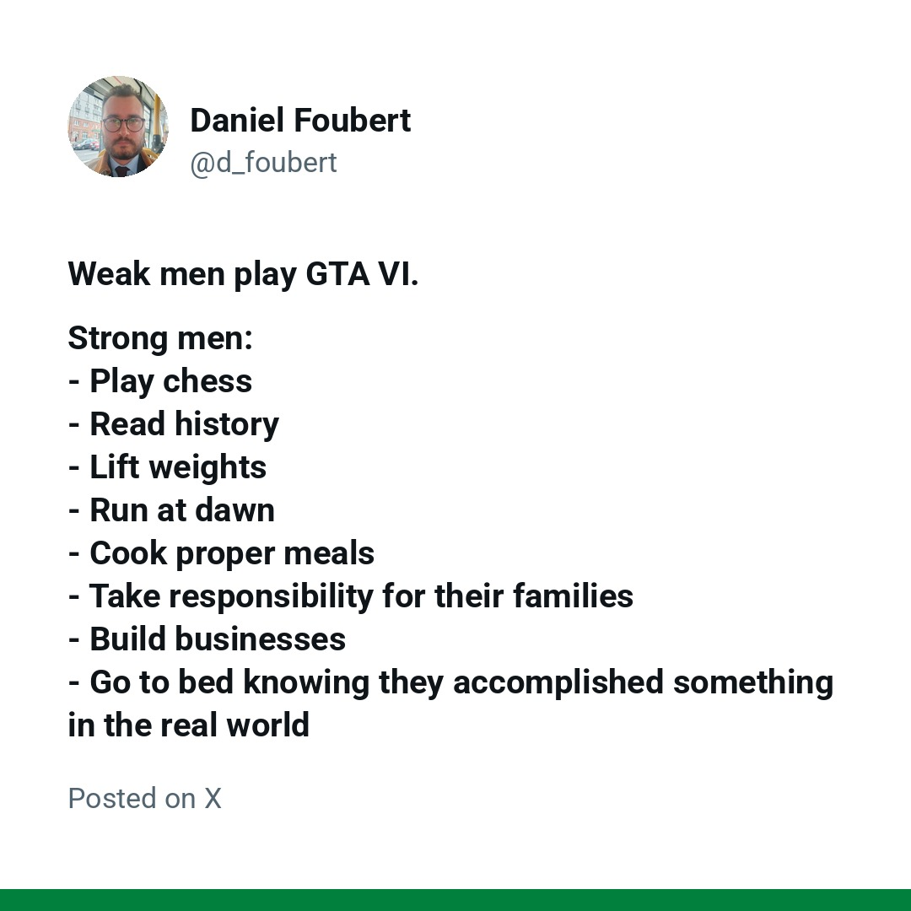
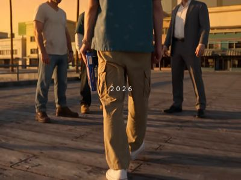
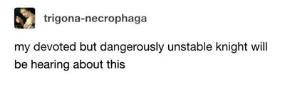
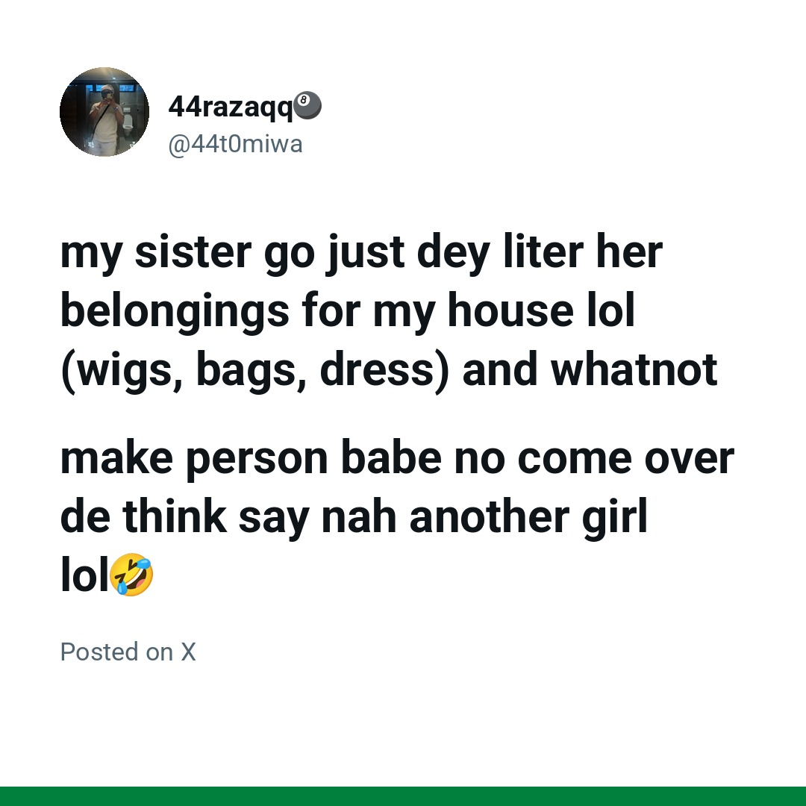
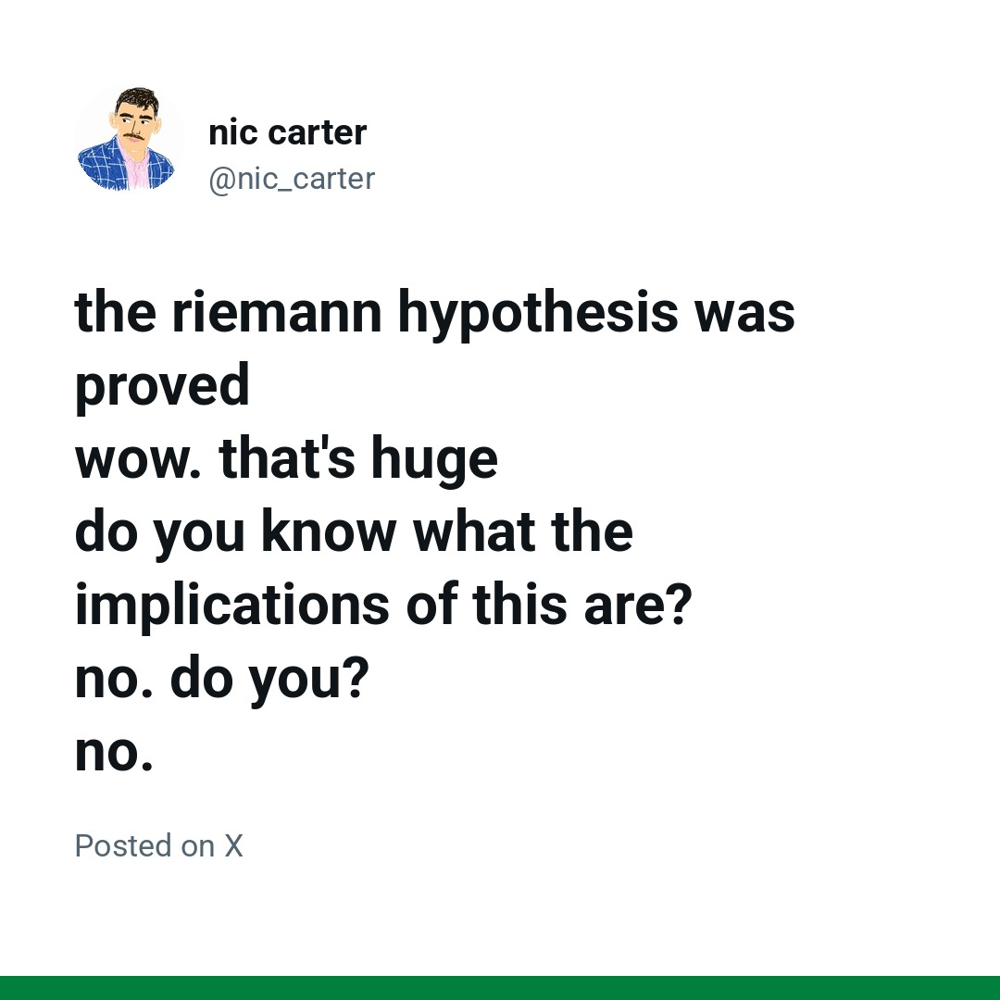
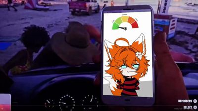

Ranked by cross-platform virality on X, TikTok, Instagram, Reddit, YouTube and Know Your Meme.

via @ngnchiikawa on X

via @d_foubert on X

via @uekan2b on TikTok

via trigona-necrophaga on Tumblr
via @mikdunno on X
via @starssvy on X

via @44t0miwa on X
via @1low_hd on TikTok

via @nic_carter on X

via @AGlubbable on X
Top 10 Memes This Week | Top 10 Memes This Month | Daily Meme Report Archive
 MEMESTAND
MEMESTAND